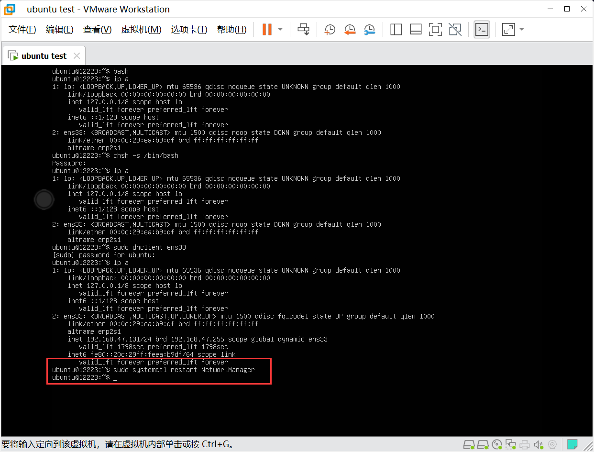

创建网络
在新的B系统当中是没有网络以及IP的，我们需要设置一下网络。
如果每次关机后，再打开虚拟机都得重新做挂载
1.挂载：
sudo mount /dev/sdb2 /mnt/usb/

sudo mount /dev/sdb1 /mnt/usb/boot/efi/

挂载：
sudo mount -o bind /dev/ /mnt/usb/dev/
sudo mount -o bind /proc/ /mnt/usb/proc/
sudo mount -o bind /sys/ /mnt/usb/sys

2.更新
sudo apt update

3.进入B系统
sudo chroot /mnt/usb/ /bin/bash

4.下载network-manager
apt install network-manager

5.下载ssh
apt install openssh-server

6.下载net-tools
apt install net-tools

7.打开虚拟机进入B系统

8.输入ubuntu登录

9.补全share
补全：bash （临时的）
bash

永久补全
chsh -s /bin/bash

退出重新登录ubuntu
exit


请求IP
1.临时请求IP
sudo dhclient ens33

2.永久IP
启动网络管理：
sudo systemctl restart NetworkManager

查看启动状态
sudo systemctl status NetworkManager

q 退出
打开开机自启
sudo systemctl enable NetworkManager

编辑文本
sudo vim /usr/lib/NetworkManager/conf.d/10-globally-managed-devices.conf

i 进入编辑模式
在*,后面加上
except:type:ethernet,

esc 退出编辑模式
：wq保存退出
重新启动NetworkManager
sudo systemctl restart NetworkManager

查看IP
ip a

重启sshd
sudo systemctl restart sshd

设置开机自启sshd
sudo systemctl enable sshd

设置完成后就可以连接mobaxterm
连接时系统会提醒你是不是换了系统，选择是皆可。

返回目录-Linux初级指导教程

Nya-WSL
代码没写完，哪有脸睡觉
4
5
3